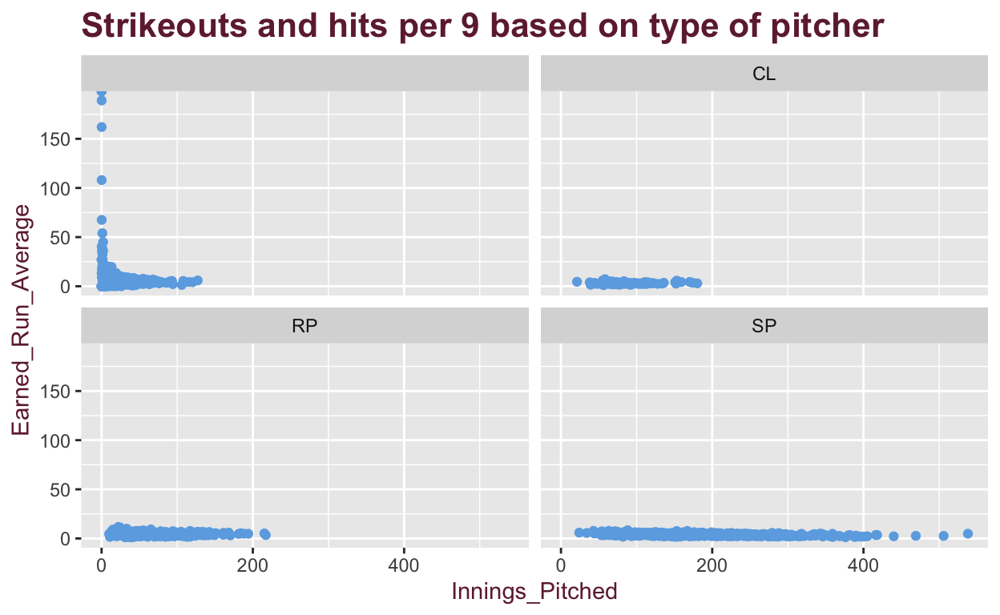

The Phillies Have been around since 1883 and through that time have had a long and interesting statistical journey, particularly on the pitching end. To start things off is a scatterplot comparing the amount of games played of players compared to each year. This visualization is very jumbled but it is meant to be so to show you the extent to how much data there is when it comes to the franchise history. There have been well over 2000 pitchers since the inaugeral season and this visualization shows what something like that looks like. As you Can see the data varies a lot, with many pitchers having limited appearences, but some having around 70 games played, both in the 1800s and more recently in the 2000s. GAMES PLAYED BY YEAR
This Graph Below again shows just the plethora of pitchers that have played for the Phillies but it differentiates them by the type of pitcher, with CL meaning a closer(9th inning specialist), RP meaning reliever, SP meaning a Starter, and the Last bar being any pitcher that played multiple roles during a season. As You can see the team has gone through dozens of pitchers every year, especially more recently as the league has put more emphasis on arm care and management.
Now lets take a look at the stats for the 4 different pitcher positions. Specifically The Earned Run Average and Innings, both Important stats to determining what a pitcher can bring to the table. As You can see from the 4 different splits of pitchers,The starters have the most data in the bottom right corners, which is has the best ERAs and Most innings pitched, This is a start to showing us that The SP has been the most important pitcher in Phillies History.

Now I want to Look At whether Lefties or Righties remain have been better over the years. I am using a Stat here called FIP, which is fielding independent pitching, this stat is the best in ganging how good a pitcher is on his own, as it takes the defense behind him out of the equation and is just all about how the individual does.
As you can see they are pretty even between the two, so we should go deeper into seeing what the best type of pitcher between the two really is, lets look at the last 40 years rather than all time and see if that makes any difference.
Here, You can see how righties look to have a better FIP by a small Margin over this time period as well as lefties having bigger outliers with extremely high FIPs, but lets go ever further and do just this century next.
You can see now that lefties have even more outliers with High FIPs, and Righties have even more numbers with lower FIPS, this makes sense when you think about all the great Righties the Phillies have had, such as Roy Halladay and Brett Myers.Now lets finish this off and just go off of the last two years and see how those results compare to all of those that we have already seen.
Righties win again, while both graphs are skewed right a bit, Righties hold the edge, and guys like Zack Wheeler and Aaron Nola are the Reason for that.
Moving on lets look at the optimum Age for A great Phillies Pitcher, again lets use just the 21th century data for this and see we will use K to walk rate, which is another great stat to determine a pitchers dominance. Statistically the Pitchers that walk less hitters and strikeout more are the most valuable to the franchise.
Looking at this, we are looking for that deep Blue color. What Catchers your eye first are all the outliers in the late 2000s which crazy age are all Jaime Moyer, who pitched for the Phillies until he was 47! While his Age is crazy, his Ratio was fairly mediocre. What stands out to meet is the pocket of deep dark Blue in the late 2010s and into the 2020s under and around 30. This graph does a good job in showing us that the optimal age for a phils pitchers is in his late 20s and into his 30s.
Finally for the last two Visualizations we are going to pivot to just the last two years Primarily. We have already determined that the Greats for the franchise are on average righties, typically starters due to the innings can handle, and in there late 20s, so lets see if this visualization backs us up for the last two years. Again we are going to use FIP as it will show us the clean uncut stat about who has been the best. Look for the smaller Dots you can find and see what that shows us.
As we can see again, the smallest dots for smallest FIPs all come when guys are around or just below 30. Looking for guys specifically like Aaron Nola and Zack Eflin in the SP catagory, they match the demographics we had spoken on earlier as well.
There you have it, The best Pitchers all time for the Phillies are Righties, Starters, and just under 30. Looking at Most Recent Data as well, Aaron Nola fits every category. While Nola is not the best in Phillies history most likely, he as every categorical quality to be so!